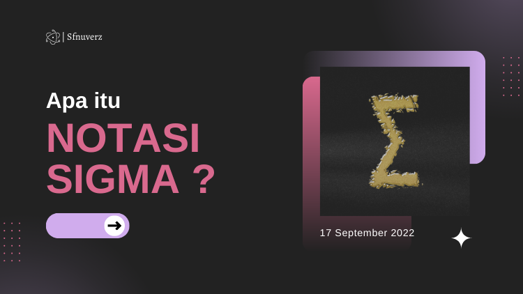

Blog Saya

Antenna Wajan Bolic E-Goen
Antenna Wajanbolic e-goen adalah sebuah antenna nirkabel yang terbuat dari wajan yang fungsinya untuk memperkuat sinyal...
Continue Reading
Lihat Blog

Notasi Sigma
Apa itu notasi sigma? Notasi sigma yang ditulis dengan lambang Σ adalah sebuah tanda yang igunakan untuk menuliskan suatu penjumlahan secara singkat...
Continue Reading
Lihat Blog

Artificial Intelligence (AI)
Kecerdasan buatan atau disebut artificial intelligence (AI) menjadi hal yang baru bagi sebagian masyarakat di Indonesia.dikarenakan istilah tersebut jarang digunakan dalam kegiatan sehari-hari...
Continue Reading
Lihat Blog

Sejarah Internet di Indonesia
Bagaimana sih proses masuknya internet ke indonesia? Oke jadi pembahasan kita kali ini adalah proses masuknya internet ke indonesia...
Continue Reading
Lihat Blog